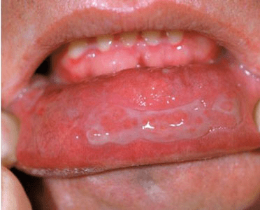
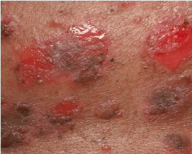

Pemphigus vulgaris is a rare autoimmune disease that causes painful blistering on the
skin and mucous membranes. If you have an autoimmune disease, your immune system mistakenly
attacks your healthy tissues.
Pemphigus vulgaris is the most common type of a group of autoimmune disorders called pemphigus.
Each type of pemphigus is characterized by the location where the blisters form.
Pemphigus vulgaris affects the mucous membranes, which are found in areas including the:

Strictly speaking it is not, as it does not pass from generation to generation. Genetic factors are important, but other factors are needed to trigger pemphigus vulgaris into activity.

In most patients, the blisters and erosions start first in the mouth, and appear later on the skin. In a few, the skin is affected first. Most patients get erosions in their mouth at some time; but some never get blisters or erosions on their skin.
The skin lesions start as thin-walled blisters (collections of clear fluid within the skin), arising on a background of normal-looking skin. Because they are so fragile, pemphigus blisters break very easily, leaving raw areas known as erosions. Erosions are areas of skin (or mucous membrane), which lack its top (outer) layer. They look raw and feel sore - like a burn. Erosions can join together to create larger areas of raw skin that look as if the top layer has been scraped off. Erosions can become crusty and scabbed. When they heal, those on the skin may leave discoloured marks.
Intact blisters are seldom seen in the mouth in pemphigus vulgaris because they get broken so easily. Erosions are seen there instead. There may be just one or two, or several that can join together.
General aims. Treatment is important because pemphigus vulgaris is a
serious and potentially life threatening condition if not treated early and
effectively. Treatment entails using medicines that are usually taken by mouth
but are sometimes given in severe cases into a vein through a drip requiring
admission as an inpatient. Because pemphigus vulgaris is an autoimmune
disease, most treatments used work by suppressing the immune system.
The aims of treatment are to prevent new blisters forming and to heal existing
ones. It usually takes about 2 to 3 weeks of treatment to stop new blisters
developing, and sometimes as long as 6 to 8 weeks for healing to occur.
Once control has been achieved, the dose of the medication can be reduced
slowly to the lowest level needed to keep the pemphigus vulgaris under
control. Treatment usually starts with an oral corticosteroid and may later be
combined with a so-called ‘steroid-sparing’ drug.
Corticosteroids. Pemphigus vulgaris is usually treated first with an oral
corticosteroid. Oral corticosteroids are effective and work quicker than most
other treatments. The corticosteroids used are synthetic versions of a natural
hormone produced in smaller quantities by the adrenal gland and work by
suppressing the immune system.
High doses of corticosteroid therapy, usually prednisolone, are given to bring
the pemphigus vulgaris under control. The dose is then reduced slowly to
minimise side effects. However, prednisolone can seldom be stopped
completely and most patients require a small maintenance dose to keep the
disease under control. The dose varies from person to person, and depends
partly on the patient’s weight.
It is very important to consult your doctor if you are considering stopping your
corticosteroid treatment. It is dangerous to stop oral corticosteroid treatment
suddenly because your body may have stopped making its own
corticosteroids and become dependent on the corticosteroid tablets you are
taking for its daily requirement.
Nearly all patients gain weight on steroid treatment, however disciplined they
are about food. It's important not to get too worried at the start of treatment
when the crucial thing is to get the Pemphigus under control.
Steroid-sparing or adjuvant drugs. Unfortunately, although they are very
effective, corticosteroids do have many side effects. For this reason, other
medications are often used as well. These are known as steroid-sparing drugs
and they can work well when combined with corticosteroids.
They include the following:
Skin and Mouth treatments (topical treatments). Emollients and steroid
cream may be used on skin blisters and may help so that the dose of steroid
tablets can be reduced.
Mouth blisters and erosions may be treated with steroid sprays or mouthwashes and mouthwashes
containing an antiseptic or local anaesthetic.
Other treatments. Plasmapheresis, intravenous immunoglobulin therapy and rituximab may be considered if high doses of oral steroids and other treatments are not effective. These may also be tried in combination with steroid tablets. Further research continues to find better treatments or combinations of treatment for pemphigus vulgaris.